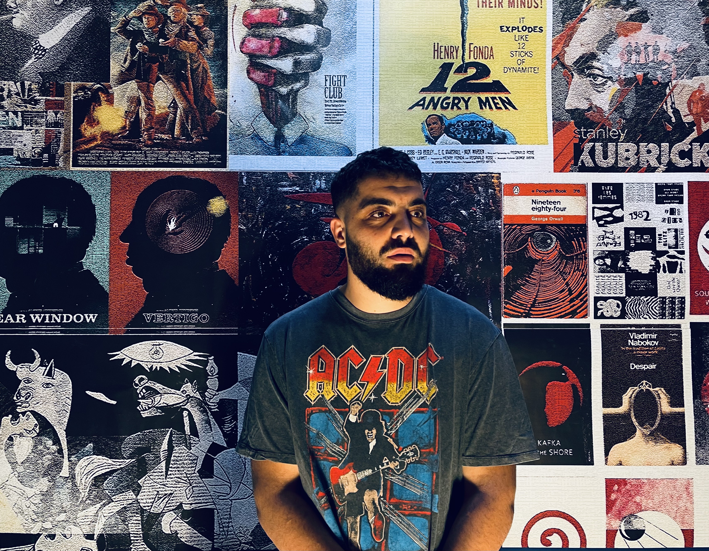

Ylli, ka lindur ne vitin 1992 ne qytetin e Pejes.
Shkollen e mesme e ka perfunduar ne gjimnazin "Bedri Pejani" ne Peje, ndersa, studimet i ka kryer ne Prishtine, ne fakultetin teknik, respektivisht "Fakulteti i Ndertimtarise dhe i Arkitektures" dega konstruktiv.
Historia dhe studimi i sjelljeve njerezore jane pasioni i tij, per kete arsye ka perfunduar edhe nje semester online ne University of London ne temen "Global diplomacy in modern world".
Aktualisht punon si content writer dhe merret me udheheqjen e bizneseve familjare.
Deshira per te mesuar programim nuk i lindi nga pasioni per teknologjine, por nga pasioni per numrat dhe zgjdhjen e problemeve.
Llogaria ime ne TwitterAdresa e banimit
Rr.Enver Hadri Nr.13